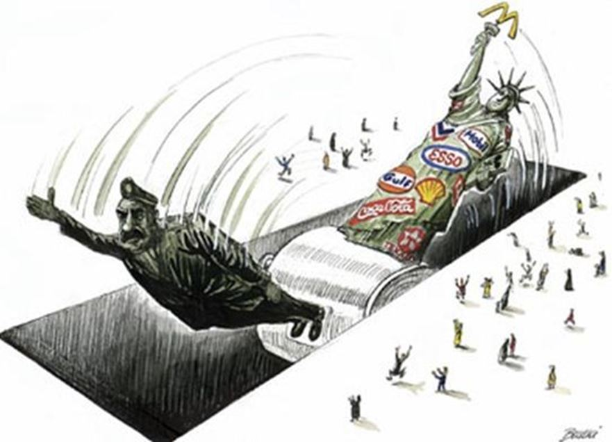

Il n’est pas d’usage dans les colloques académiques de parler ainsi, de manière si brutale et pourtant il m’apparait nécessaire aujourd’hui, et surtout ici sur cette terre Moldave, zone de confluence tectonique entre l’Est et l’Ouest, d’affirmer lucidement et de dire clairement qui nous combattons et pourquoi. Pour Carl Schmitt : « la distinction spécifique du politique […] c’est la discrimination de l’ami et de l’ennemi.» (Carl SCHMITT, La notion de politique – Théorie du partisan). De son point de vue, la dialectique ami/ennemi s’appréhende comme un concept autonome dans la mesure où elle ne s’amalgame pas avec des considérations morales (bien/mal) ni esthétiques (beau/laid), mais constitue en elle-même une opposition de nature. Le concept de désignation de l’ennemi de Carl Schmitt, idéologue du régime nazi, fut en quelque sorte intégré mais amendé par le philosophe français Julien Freund entré très jeune dans la résistance à l’idéologie nationale-socialiste : « j’avais compris jusqu’alors que la politique avait pour fondement une lutte opposant des adversaires. Je découvris la notion d’ennemi avec toute sa pesanteur politique, ce qui m’ouvrait des perspectives nouvelles sur les notions de guerre et de paix ». Freund fut dès la fin de la guerre, un partisan de la réconciliation franco-allemande et de l’Europe. Il resta toute sa vie antinazi malgré sa fréquentation de Carl Schmitt et comme il le lui écrivit un jour : « Si nous nous étions rencontrés plus tôt, nous n’aurions pas été du même bord. »
Indéniablement, le concept de désignation de l’ennemi, chez Schmitt comme chez Freund, puise dans la pensée machiavélienne mais dans la logique de l’auteur du Prince, son ouvrage n’est qu’un bréviaire de l’absolutisme et de conseils donnés au Souverain pour que celui-ci puisse triompher et conserver le pouvoir.
Autrement dit, la vision politique de Machiavel et de ceux qu’il a inspiré est à échelle humaine et ne s’inscrit pas dans un processus historique transgénérationnel. Les conseils que donne le philosophe florentin à Laurent de Médicis, même s’ils intègrent les valeurs cyniques, ne s’inscrivent pas dans une vue du monde visant au pouvoir absolu sur l’humanité entière. Machiavel souhaite la réunification de l’Italie par les Médicis. Son ambition s’arrête là. Or, nous avons de bonnes raisons de penser, qu’à peu près à la même époque, en Grande-Bretagne, et peut-être par l’entremise de philosophes italiens comme Pic de la Mirandole ou Gerolami Cardano, est en train de se cristalliser autour d’un philosophe kabbaliste renommé, John Dee, une autre conception du monde, beaucoup plus ambitieuse et qui elle visera à l’imperium total sur les affaires du monde.
John Dee fut l’inventeur de la notion d’Empire britannique, et à partir de ce moment et pour la seconde fois dans l’histoire du monde, l’aristocratie d’un peuple se percevait comme élevée par la grâce divine pour accomplir à travers les siècles la volonté du Tout-Puissant.
Ce qu’il faut bien comprendre c’est que depuis cette révolution de la pensée, la nature des conflits a radicalement changé : nous ne sommes plus à l’heure des affrontements entre les Horaces et les Curiaces, entre les Gaulois et les Romains, les Tatars et les Russes, les Roumains et les Turcs, mais nous sommes entrés dans une nouvelle ère où l’ennemi n’a plus seulement pour but de conquérir des territoires ou d’exiger un tribut des peuples vaincus, mais il est aussi l’incarnation d’un hegemon total qui ne perçoit pas la guerre en terme d’amis ou d’ennemis, mais dans une radicalité absolue où l’altérité doit être « désanimée » c’est-à-dire littéralement privée de son âme (vendre son âme au Diable…).
Cette entité profondément hostile à tout ce qui est humain, n’est pas seulement l’incarnation d’une volonté de puissance destinée à conquérir le monde, mais je crois profondément que le petit cercle d’initiés qui agit depuis des siècles pour asseoir sa domination sur la terre au fil des générations vise à l’anéantissement de la vie par haine totale du genre humain. J’en veux pour preuve la triste condition humaine que l’on peut observer sur tous les territoires où règne l’esprit de Mammon. Regardez à quoi ressemblait l’Angleterre au XIXème siècle telle que la décrivait Dickens ou encore la France miséreuse que dénonçait Zola. Regardez à quoi ressemblent les grandes métropoles occidentales où des populations obèses se pressent dans des hypermarchés pour s’empiffrer de nourritures frelatées fabriquées par les multinationales. Regardez ces banlieues immondes où s’entassent dans des clapiers de béton des populations déracinées et abruties par le spectacle du sport et des divertissements débiles.
Un bon médecin, quand il a achevé son diagnostic sur la pathologie observée sur le patient, ne se contente pas d’administrer des remèdes, mais il essaye d’identifier les causes et la racine du mal. C’est là toute la définition de l’étiologie, à savoir l’étude des causes et des facteurs d’une maladie.
Le temps qui m’est imparti ne permettra pas d’entrer dans les détails de ce que l’on peut définir comme la maladie occidentale par excellence, celle qui se diffuse tel un virus par pandémie et que j’ai baptisée l’idéologie anglo-saxonne.
Pourquoi anglo-saxonne, tout simplement parce que l’observation objective de la plupart des guerres et des conflits qui se sont déroulés depuis des siècles en Europe et dans le monde et jusqu’à nos jours ont à un moment donné une implication née quasi invariablement sur les bords de la Tamise ou du Potomac.
QU’EST-CE QUE L’IDÉOLOGIE ANGLO-SAXONNE ET COMMENT EST-ELLE NÉE ?
Il faut pour cela remonter à la période élisabéthaine de la monarchie anglaise, à la fin du XVIème siècle et au début du XVIIème. En 1600, l’Angleterre ne compte que 4 millions d’habitants quand la France en compte près de 20 millions. Cette faiblesse démographique comparée aux puissances continentales de l’époque, France et empire des Habsbourg et la menace extrême qu’a représentée la tentative d’invasion de l’Angleterre par l’Invincible Armada du roi d’Espagne Philippe II est probablement à l’origine de la politique suivie depuis lors par les élites britanniques (politique du faible au fort), à savoir provoquer la division et l’affrontement chez tous leurs ennemis potentiels. Leur principal atout est l’insularité et la puissance maritime et elles l’exploiteront à fond, par tous les moyens, la guerre bien sûr, le blocus -on appelle cela aujourd’hui des sanctions -, mais aussi la piraterie et le commerce (c’est dans les Caraïbes que sont domiciliées aujourd’hui quelques-unes des principales places-fortes anglo-saxonnes de l’évasion fiscale et que sont ces paradis fiscaux si ce n’est des havres où se réfugient les pirates de l’économie mondiale après avoir spolié les peuples qu’ils ont escroqués).
Le grand rêve de puissance et d’hégémonie mondiale de l’oligarchie anglaise est né, selon moi, au retour de l’expédition autour du monde du pirate Francis Drake le 26 septembre 1580 où la part du butin volé aux Espagnols et réservée à la reine Elisabeth représentait selon certaines sources une fois et demie le budget annuel du royaume.
Francis Drake est probablement devenu après ses exploits le modèle à suivre et parmi ses nombreux admirateurs, un en particulier mérite d’être retenu, Walter Raleigh (cf. controverse École de la nuit), car il fut l’un des premiers avec John Dee à avoir conceptualisé l’hégémonie anglo-saxonne sur le monde.
En effet, ce gentilhomme, un peu pirate lui aussi, un peu aventurier et qui finit décapité à la tour de Londres, eut le temps d’écrire avant sa mort un ouvrage intitulé en toute simplicité l’Histoire du monde et dans lequel il affirme : « Qui tient la mer tient le commerce du monde, qui tient le commerce tient la richesse, qui tient la richesse du monde tient le monde lui-même ».
Mais cette idée s’est transmise de génération en génération à travers les siècles dans le monde anglo-saxon (par deux sources, souvent liées : source exotérique universitaire et source ésotérique franc-maçonnerie), notamment chez le Britannique Mackinder dont la formule maîtresse est « qui tient l’Europe orientale tient le heartland, qui tient le heartland domine l’île mondiale, qui domine l’île mondiale domine le monde » et qui s’est transformée chez l’Américain Spykman dans la formule plus ramassée « Qui contrôle le rimland gouverne l'Eurasie ; qui gouverne l'Eurasie contrôle les destinées du monde ».
Ce qui est extraordinaire c’est qu’à trois siècle de distance, ces trois personnages partagent tous l’idée de domination du monde et c’est là véritablement qu’il faut comprendre la nature profonde de cette idéologie anglo-saxonne : la volonté d’asservissement de toute l’humanité.
Dans la conception cynique de la politique telle que la concevaient Machiavel et ses successeurs, la notion d’ami et d’ennemi est relative. En effet, l’ami peut trahir demain et l’ennemi d’hier devenir un allié, voire un ami à son tour. L’idéologie anglo-saxonne elle a absolutisé la notion d’ennemi puisque tout est subordonné à la fin ultime qui est de dominer toutes les nations. Bien entendu, en tenant compte de la complexité des affaires du monde et ce projet mondialiste s’inscrivant dans une lutte à travers les siècles, on a pu observer les Anglo-Saxons exceller dans l’art de renverser les alliances, de jouer les uns contre les autres et pratiquer avec un art consommé une politique que n’aurait pas reniée Machiavel. Mais là où Machiavel limite la fortune du Prince à sa conquête de l’Italie et à l’horizon de la vie de ce Prince, les apôtres de l’idéologie anglo-saxonne ont introduit une dimension téléologique justifiant leurs actions par l’atteinte du but final – ce qu’ils appellent aujourd’hui la gouvernance mondiale - une espèce de Parousie où les élus ayant signé le pacte seraient appelés à régner sur le monde. Dès lors, tous ceux qui s’opposent ou qui freinent, même inconsciemment, cette vision du monde deviennent des ennemis absolus et sont désignés comme le Mal par excellence, sans espoir de rémission, sauf à déposer les armes, comme la Russie l’a fait un temps entre 1991 et 1999.
Mais si l’idéologie anglo-saxonne a mis en place un Système qui non seulement ignore la notion première du politique à savoir la recherche du bien commun mais considère au surplus tout ce qui ne le sert pas comme le mal, alors la vieille distinction ami/ennemi n’est plus opérante. Nous ne sommes plus et depuis longtemps, à l’époque de la guerre en dentelle et des relations chevaleresques au combat, nous sommes au contraire plongés dans une guerre totale, une relation agonale absolue dont la finalité est notre disparition ou notre liberté.
Ayant retenu de Machiavel la nécessité de la ruse et de la dissimulation pour parvenir à ses fins, le Système applique ces méthodes dans tous les domaines de la vie et en particulier dans le contrôle des esprits.
Bien évidemment, il va aussi user de la force ou de la menace de la force pour faire avancer ses pions – ce sont les guerres en Yougoslavie, en Tchétchénie, en Géorgie ou en Ukraine, guerres en Lybie, en Syrie ou en Irak, boucliers anti-missiles placés en Roumanie et en Pologne ou troupes de l’OTAN positionnées aux frontières de la Russie - et bien évidemment la conquête du monde ne peut s’envisager qu’avec le concours de la force, mais bien souvent celle-ci n’est utilisée que pour masquer d’autres méthodes comme celles qui ont été utilisées avec succès, notamment en Géorgie et en Ukraine lors des révolutions de couleur qui ont fait basculer ces pays dans le camp occidental.
Et c’est là que je voudrais attirer l’attention de nos amis sur le danger mortel que fait courir le combat culturel et que pratiquent admirablement les sectateurs de Mammon. Vous croyez que la publicité est une simple industrie devant être gérée par des marchands de rêve. Grave erreur les amis, il s’agit d’une arme de destruction massive destinée à atomiser et déshumaniser les sociétés dans lesquelles elle opère.
Vous pensez que la musique est l’âme d’un peuple ? Non ! elle est devenue un business mondial et la majorité des musiques que nous écoutons - même malgré nous - sont anglo-saxonnes parce que les canaux par lesquels elle est diffusée sont régis par la publicité, elle-même contrôlée par la haute finance.
Sans publicité, pas de contrôle occulte des médias. Le premier devoir d’une société recouvrant sa liberté devrait être d’interdire les régies publicitaires. Le deuxième devrait être de nationaliser les banques et le troisième de contrôler l’enseignement, en commençant par l’université où on forme les maîtres, en y éradiquant les ferments du libéralisme, qui n’est que l’idéologie politique préférée du Système, celle par laquelle, est perfusée goutte à goutte dans le corps d’un peuple les ferments de la dissolution et de la mort.
Mais pour que les choses soient bien claires, les oligarques anglo-saxons peuvent aussi se servir du fascisme ou du communisme pour provoquer des affrontements mortels et en tirer les marrons du feu. Qui a financé la Révolution de 1917 ? Qui a financé l’arrivée de Hitler au pouvoir ?
Par ailleurs, ce sont bien les Russes qui ont pris Berlin en 1945 ? Mais qui aujourd’hui contrôle l’Allemagne de Madame Merkel si ce n’est la City de Londres ou encore Wall Street ?
En guise de conclusion, je reviendrai sur le titre de mon exposé : Désigner l’ennemi/diagnostiquer le mal pour vous dire que nous aurions tort de considérer l’idéologie anglo-saxonne comme un simple adversaire qu’il nous faut affronter. L’idéologie du Système est une vision du monde globale dont la finalité est la réduction drastique de l’humanité et la mise en esclavage de ceux qui auront été épargnés. Il ne s’agit donc pas d’une lutte entre les Gibelins et les Guelfes, les Armagnacs et les Bourguignons, les sudistes et les nordistes, les Avars et les Petchénègues ! Non ! Il s’agit d’une guerre totale, d’essence spirituelle et dont l’enjeu est en toute simplicité la survie ou la disparition de l’humanité. Le triomphe du mondialisme, si par malheur il advient, sera le triomphe du mal.
Une des armes préférées du Système est la pratique de l’inversion accusatoire consistant à imputer à son ennemi la responsabilité d’un crime que l’on a soi-même commis. Le Système est très doué aussi pour diaboliser ses ennemis transformant les patriotes en nazis, ceux qui luttent contre l’euthanasie ou l’avortement comme des ennemis de la liberté, ceux qui défendent le christianisme comme des obscurantistes etc.
Il faut retourner ces armes de diabolisation contre le Système. Désormais, grâce à l’élection présidentielle française, les masques sont tombés et le véritable clivage sera entre les patriotes et les mondialistes. Ces derniers sont les ennemis de la liberté ! Ce sont eux les ennemis de l’humanité ! Ce sont eux les sectateurs du fascisme financier ! Ce sont eux les fossoyeurs de la vie. Il est temps d’ouvrir les yeux les amis et de savoir vraiment contre qui nous nous battons.
Partager cette page